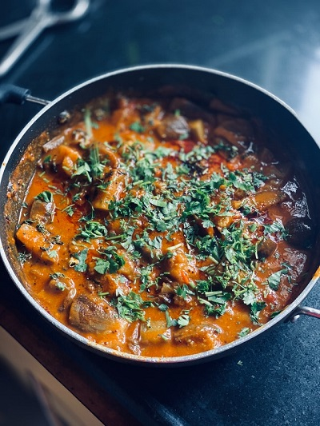

Oven Beef Stew

Description
Stay warm during the cold winter months with this delicious Oven Beef Stew. This stew is healthy, nutritious and easy to prepare.
Ingredients
- 1kg stewing beef
- 50g flour
- 1 teaspoon white pepper
- 1 teaspoon Hinds seasoning
- 3 tablespoons sunflower oil
- 2 cups hot water
- 1 beef stock cube
- 2 carrots, peeled and sliced
- 2 potatoes, peeled and cubed